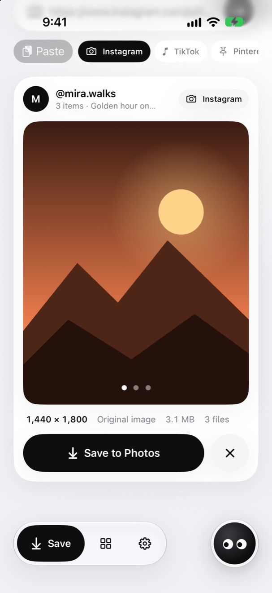
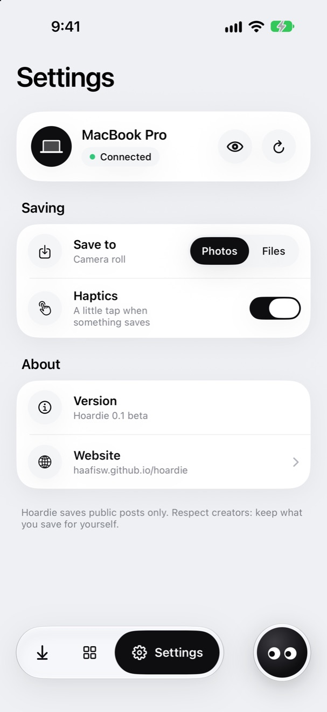
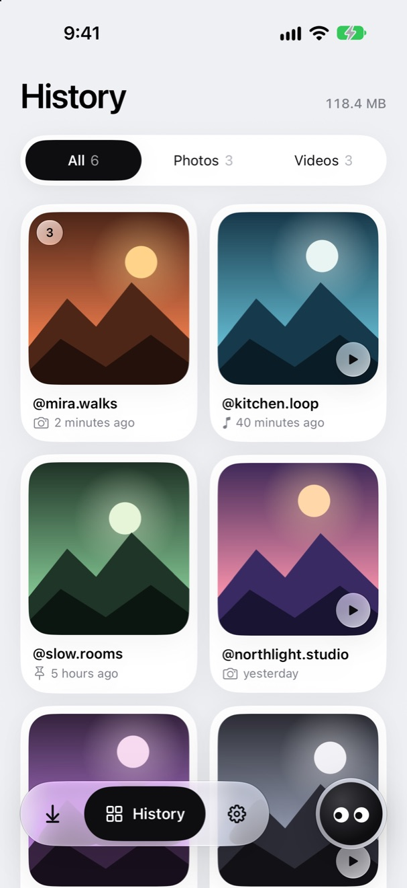

The original file. Untouched.
Full resolution, the original format, the sound that came with it. Hoardie never re-encodes, crops or compresses what it saves.

Hoardie keeps the photos, videos, reels and pins you love, in the exact quality they were posted. Copy a link, tap Hoardie, and it's in your library.
Free beta · iPhone now, Mac next · Public posts only
The Hoardie film · 15 seconds
How it works
Hoardie reads the post, shows you what's inside, and saves the best file the platform has. No screen recording, no screenshots, no lost quality.
Features
Hoardie does one job and does it carefully: it keeps what you find, exactly as it was posted.
Full resolution, the original format, the sound that came with it. Hoardie never re-encodes, crops or compresses what it saves.

Copy a link anywhere. Tap Hoardie. That's the whole routine.
Public posts from the places you actually spend time.
Every photo and clip in a post comes along, in order, from a single save.
tap for the whole post
Straight into your camera roll, or tucked away in Files. Your call.

Everything you've saved, with who posted it and where. Filter, reopen the original post, or let it go with an undo.

Hoardie Helper
A small helper runs on your Mac and reads links for your iPhone over Wi-Fi. No Hoardie server sits in between. A full Mac app is on its way.
● Hoardie Helper is running Mac address MacBook-Pro.local:8787 Pairing code 4F2A9C iPhone read instagram.com/p/ridge 3 photos iPhone save 1440 × 1800 · original done iPhone read tiktok.com/@kitchen.loop video iPhone save 2160 × 3840 · original done
A closer look
Private by design
Links travel from your iPhone to your own Mac, and files go straight into your library. There's no account to make and nothing for us to see.
Support
Public photos, videos, reels, carousels and pins from Instagram, TikTok, Pinterest, X, Threads, Facebook and YouTube. Paste the link to the post, or copy it and tap the Hoardie button.
Hoardie saves the best file the platform serves, as is: full resolution, original format, no re-encoding. Platforms compress uploads on their side, so the result matches what the platform keeps, not the creator's camera file.
iPhone apps can't run the tools that read these sites. Hoardie Helper runs them on your Mac instead and hands the file to your iPhone over your Wi-Fi. Keep the helper open and both devices on the same network.
No. Hoardie saves public posts only. Stories and private accounts need a sign-in, and Hoardie never asks for your social accounts.
Check that the post is public, that Hoardie Helper is running, and that Settings shows your Mac as Connected. Platforms change their sites often; if a link still fails, send it over so it can be fixed.
What you save is for you. If you want to share someone's work, ask them first and credit them.
Hoardie is in a small iPhone beta that installs directly, outside the App Store. Request a spot below, and the Mac app will follow.
Want in, or found a link that won't save?
Get in touch